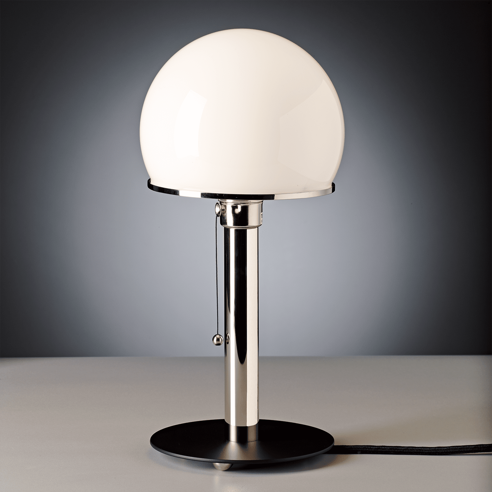
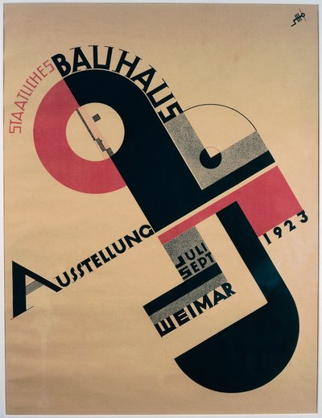
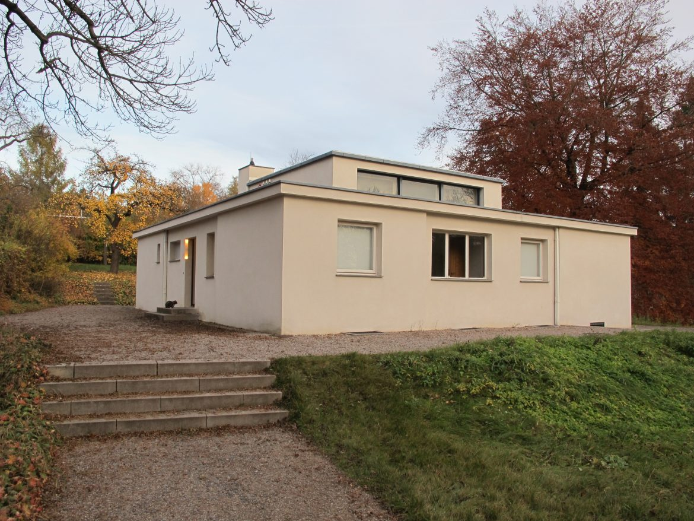
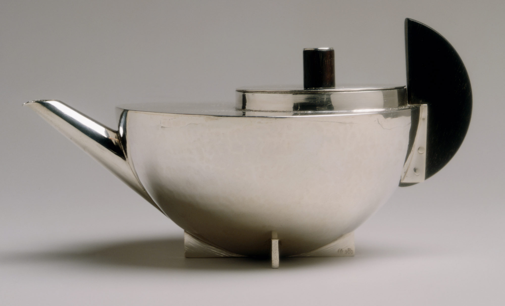
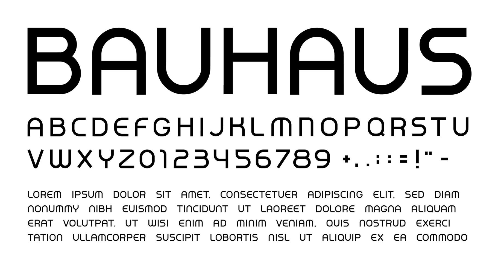
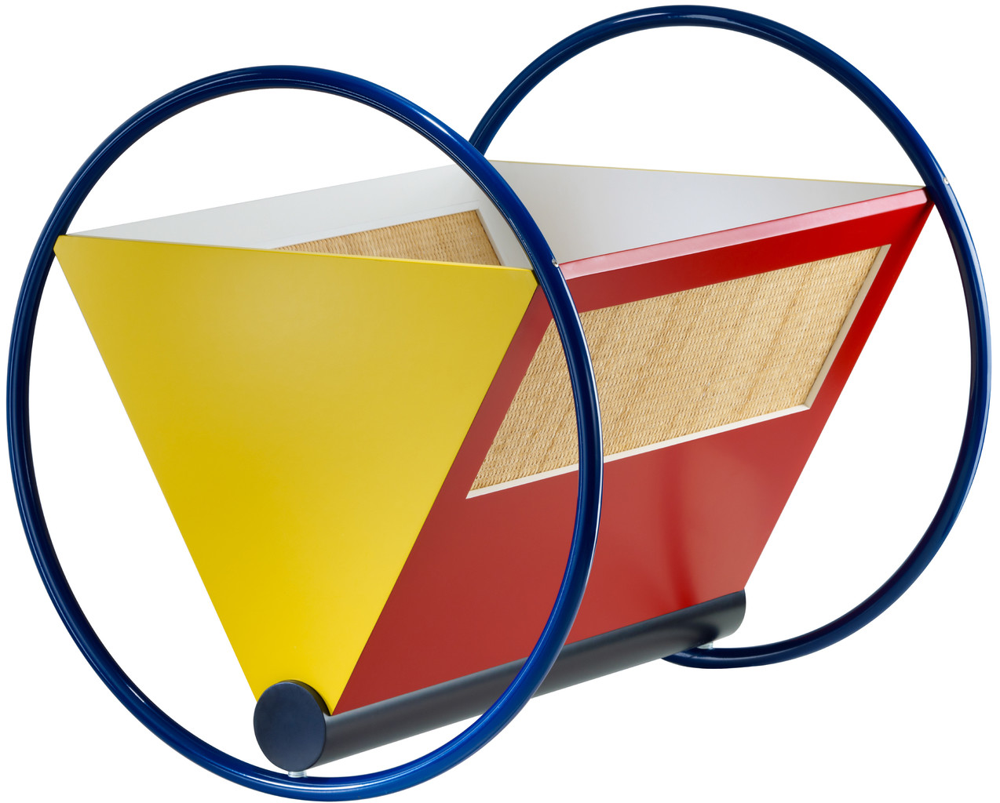
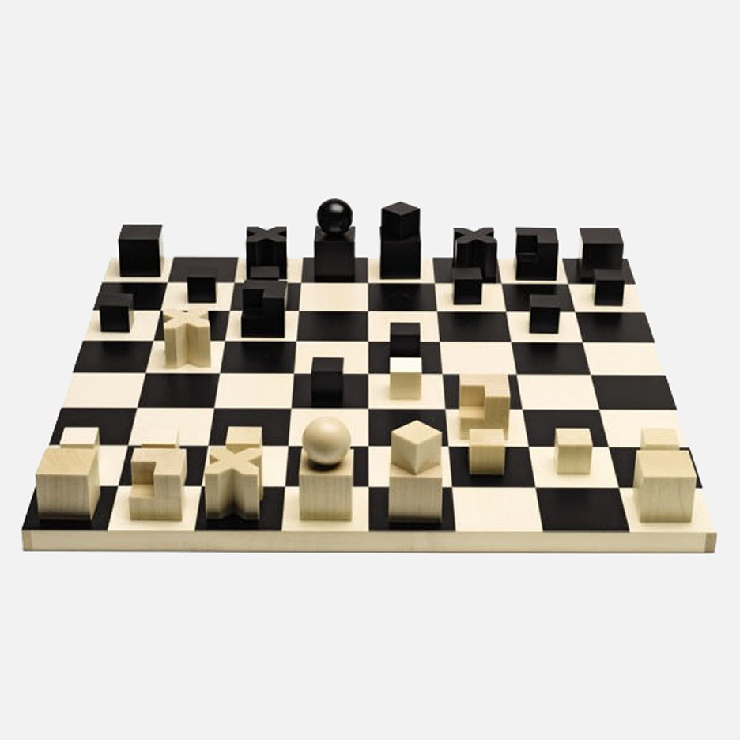
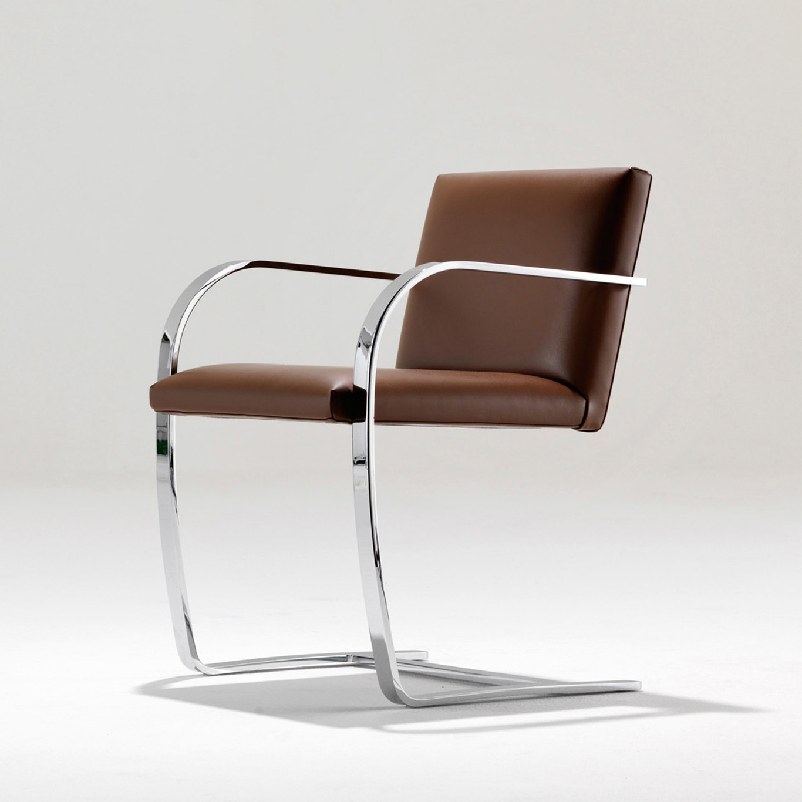
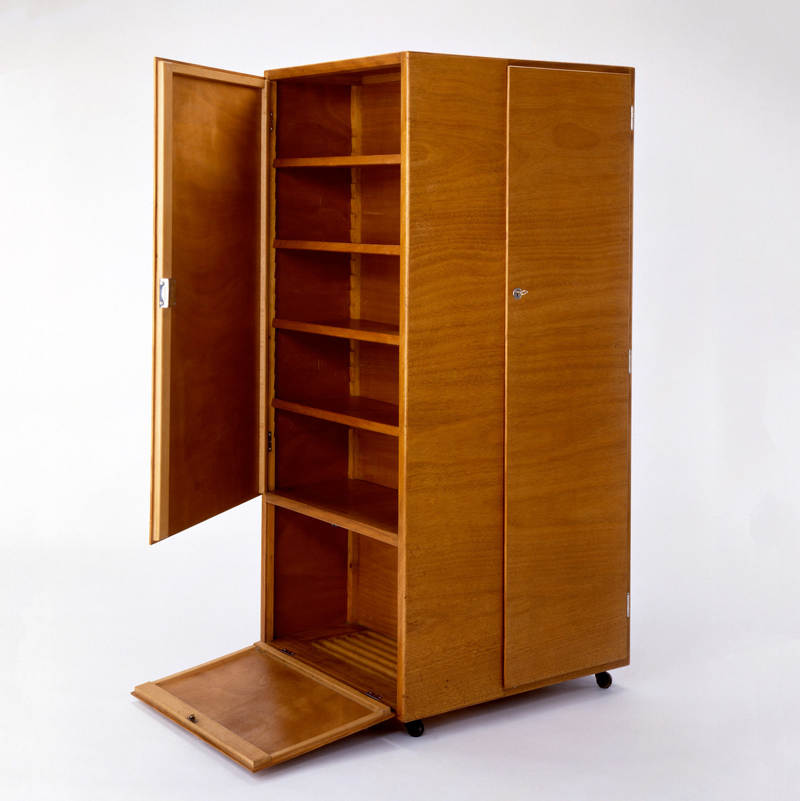
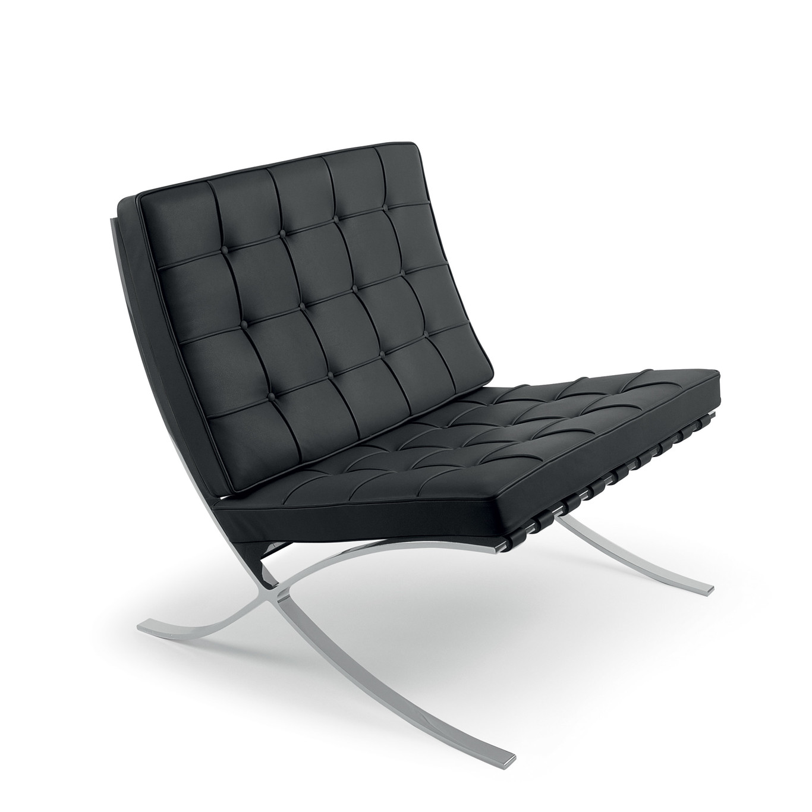

Obras

Lámpara WA 24
Wilhelm Wagenfeld · 1924
Diseño Industrial
Lámpara WA 24
Base de metal niquelado, fuste cilíndrico y pantalla de vidrio opalino semiesférica, combinando estética funcional con formas geométricas simples.

Cartel Exposición Bauhaus
Joost Schmidt · 1923
Diseño Gráfico
Cartel Exposición Bauhaus
Composición geométrica abstracta en colores primarios y tipografía sans-serif, simbolizando la unión entre arte y tecnología.

Haus am Horn
Georg Muche · 1923
Arquitectura
Haus am Horn
Vivienda unifamiliar de formas cúbicas y blancas, prototipo de la arquitectura moderna y única obra construida por la Bauhaus en Weimar.

Infusor de té MT 49
Marianne Brandt · 1924
Diseño Industrial
Infusor de té MT 49
Pieza maestra del racionalismo. Su diseño explica su función a través de la geometría pura, combinando formas básicas.

Alfabeto Universal
Herbert Bayer · 1925
Diseño Gráfico
Alfabeto Universal
Tipografía minimalista, racional y moderna que sentó las bases del diseño gráfico publicitario actual.

Cuna
Peter Keler · 1922
Diseño Industrial
Cuna
Destacada por aplicar la teoría del color y las formas geométricas.

Tablero de Ajedrez
Josef Hartwig · 1923
Diseño Industrial
Tablero de Ajedrez
Eliminó toda simbología tradicional para sustituirla por un sistema visual geométrico basado en el movimiento de cada pieza.

Silla BRNO
Mies Van Der Rohe · 1929
Diseño Industrial
Silla BRNO
Estructura en voladizo de acero en forma de "C", líneas limpias y ausencia de patas traseras.

Wardrobe on Rollers
Josef Pohl · 1929
Diseño Industrial
Wardrobe on Rollers
Pieza 100% madera, destaca por sus líneas sencillas y su utilidad.

Silla Barcelona
Mies Van der Rohe y Lilly Reich · 1929
Diseño Industrial
Silla Barcelona
Lujo minimalista. Icono del diseño moderno.

Isokon Long Chair
Marcel Breuer · 1935
Diseño Industrial
Isokon Long Chair
Fabricada íntegramente en madera laminada de abedul moldeada.

Silla de Madera con Entramado
Marcel Breuer y Gunta Stolzl · 1921
Diseño Textil y Diseño Industrial
Silla de Madera con Entramado
Colaboración entre el taller de carpintería y el de tejido. Refleja la transición de la Bauhaus desde las influencias expresionistas.